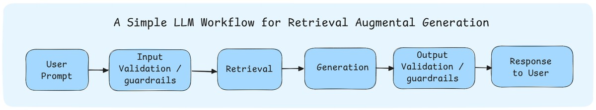
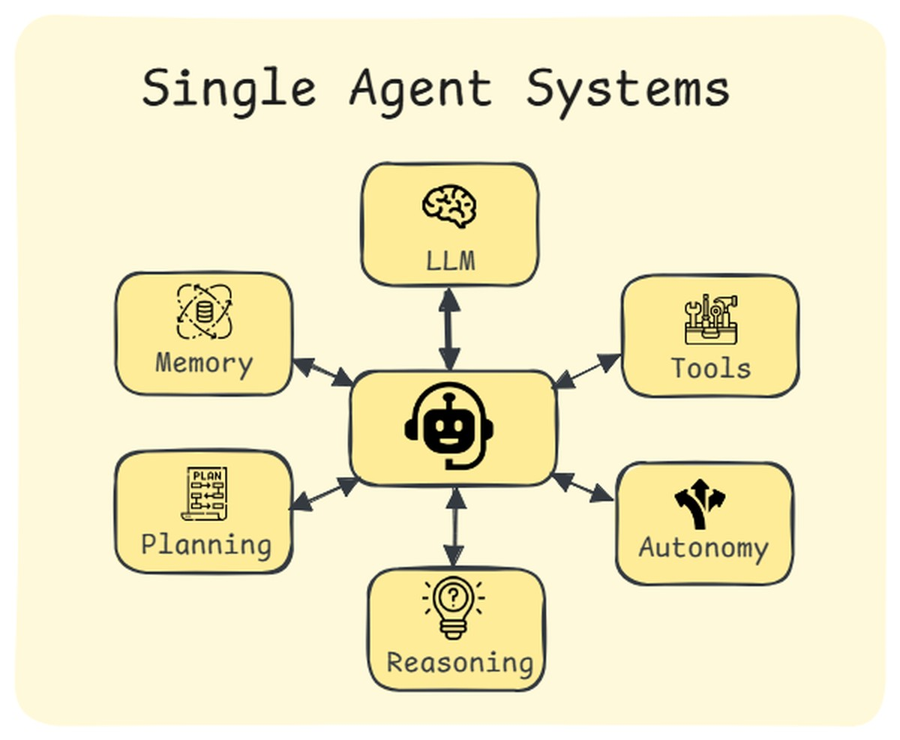
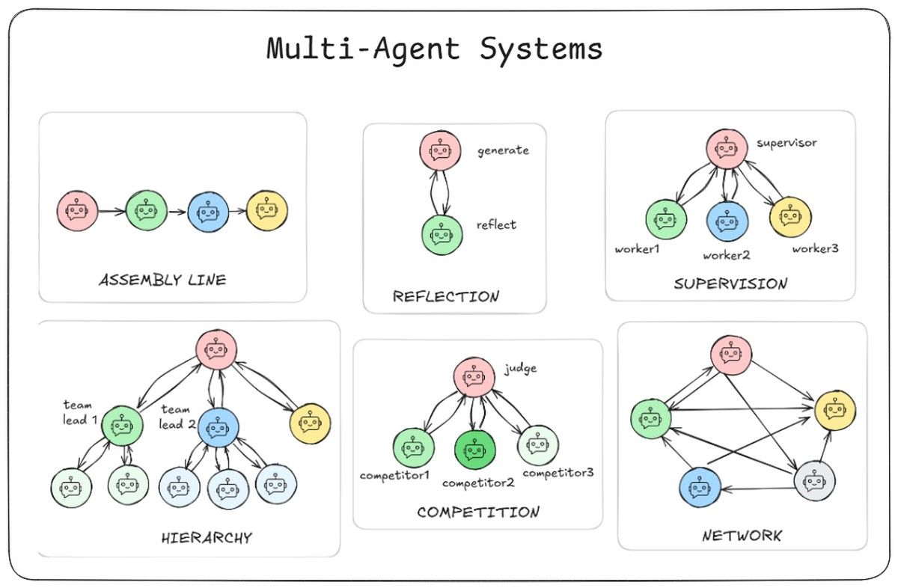

Week 1
By the end of this week, you’ll have a solid understanding of:
- The meaning and significance of Agentic AI
- What AI Agents are and how they function
- Key differences between workflows and AI agents
- Core elements/components that make up AI agents
- Real-world applications of Agentic AI
- Popular tools and frameworks used in the field
What is Agentic AI?
At its simplest, Agentic AI is the autonomy engine for AI systems. It’s the set of methods and design principles that let AI go beyond static scripts and start operating with initiative.
To make sense of this, it helps to think of Agentic AI as a progression:
-
LLM Workflows
Here, the logic and flow are defined by us, the developers. The LLM is a component inside a predictable pipeline. Every step is laid out, and while the outputs may vary, the structure is fixed. -
Single-Agent Systems
Instead of a rigid pipeline, the AI itself can make decisions. An agent can decide how to solve a problem, which tools to use, and in what order. It’s no longer just executing a flow — it’s reasoning and choosing. -
Multi-Agent Systems
Now imagine multiple agents, each with a role, collaborating on tasks. Some may coordinate centrally (like a supervisor assigning work), others may coordinate in a more decentralized way (like peers handing off tasks and exchanging information). This opens the door to much more complex, human-like teamwork.
LLM Workflows
An LLM workflow is a pipeline that connects multiple steps into a repeatable process. For example:
A typical workflow: capture the user’s question, retrieve relevant context from a vector database (Module 1), feed that context into the LLM with a well-designed prompt, and return the answer.

That’s a workflow — clear, predictable, and testable. In fact, many real-world systems — like customer support assistants or domain-specific research tools — are built entirely on workflows like these.
At Ready Tensor, for example, our publication assessment tool is a workflow: publication + assessment criteria → evaluation report. It feels smart, but under the hood it’s a straightforward LLM-driven pipeline.
By definition, workflows don’t really have autonomy. They don’t decide on their own what to do next — every step is predefined. So are they truly agentic? We treat them as part of the agentic family because they use LLMs intelligently to accomplish impressive tasks, and more importantly, they form the foundation you build on before progressing to truly autonomous agents.
It’s also worth noting that a well-designed workflow can often outperform a multi-agent system. With clever prompting, careful orchestration, and the right tools, workflows are usually faster, cheaper, and more reliable than complex agent architectures — which is why they’re often the preferred production choice.
Meet the Agent
So what makes an agent different?
Unlike a fixed workflow or chatbot, an agent decides what to do next: it evaluates the situation, chooses tools, and adapts if something doesn’t work

At its core, this means agents can:
- Plan based on user input
- Decide autonomously
- Act to achieve an outcome
A useful way to think about this is the OODA loop: Observe → Orient → Decide → Act.
- Observe: gather input (a question, a document, an event).
- Orient: analyze and identify what matters.
- Decide: pick the next action (tool, prompt, or path).
- Act: execute — then loop back to observe.
This decision loop gives agents their flexibility: they can retry with a different tool, re-plan when blocked, and adapt in ways static workflows can’t.
From One Agent to Many
Now imagine scaling up. One agent is useful. But some problems are too complex for a single agent to handle. That’s where multi-agent systems come in.
In these systems, multiple agents with different strengths work together. Some may take a centralized approach — a supervisor agent decides who does what. Others may coordinate in a decentralized way, like peers exchanging information until the problem is solved.

You don’t need to worry about the details of agentic patterns yet. Just know that there are many patterns, and in Module 2 we’ll dig into Reflection, Supervisor, Competitive, and other architectures. For now, it’s enough to know that Agentic AI spans from workflows → single agents → teams of agents.At Ready Tensor, for example, we are currently working on an Agentic Authoring Assistant (A3) system that helps users create high-quality content more efficiently by leveraging the power of multiple AI agents working together. We will work on various components of the A3 system in modules 2 and 3 of this program. At this point, you’ve seen the full spectrum:
- Workflows that follow clear, predefined paths
- Single agents that decide and adapt on their own
- Multi-agent systems that coordinate teams of agents for bigger problems
This progression — from workflows to single agents to teams of agents — is the foundation of Agentic AI. Over the next modules, we’ll move from building simple workflows to designing and deploying full multi-agent systems.
Reflection
- Think of an AI system you’ve used recently (e.g., ChatGPT, GitHub Copilot, a support chatbot). Did it feel like a workflow tool following a script, or more like an agent making choices? What clues made you feel that way?
- Where do you think most real-world AI applications sit right now: workflows, single agents, or multi-agent systems? Where do you think things are headed in the next few years?
- Suppose you were tasked with writing a movie script and you want an AI system to help. Is this a workflow application, or a multi-agent system?
- As you begin this certification, which excites you more: building reliable workflows or experimenting with flexible agents?
problems
- how is agentic ai different from rule driven or ml systems?
⚙️ 1. Rule-Driven Systems
These are traditional, deterministic systems.
- How they work: Everything is explicitly programmed — “if X, then do Y.”
- Example: A spam filter that blocks emails if the subject contains “FREE MONEY.”
- Characteristics:
- No learning.
- Predictable, repeatable.
- Can’t handle ambiguity or adapt.
→ Think: Expert systems, decision trees, classic automation.
🧠 2.- Machine Learning Systems (ML)
These are data-driven systems.
- How they work: They learn patterns from labeled or unlabeled data instead of fixed rules.
- Example: A spam classifier trained on thousands of labeled spam/non-spam emails.
- Characteristics:
- Learn from data.
- Can generalize to unseen inputs.
- Still reactive — they don’t decide why or when to act; they respond when invoked.
→ Think: ML models, neural networks, recommender systems, classifiers.
🤖 3. Agentic AI Systems
Now this is the new generation — systems that are not just predictive but autonomous and goal-oriented.
-
How they work:
- They combine reasoning (like LLMs), memory, planning, and tools to decide what to do next toward a goal.
- Can use APIs, write and execute code, browse the web, query databases, etc.
- Can act over multiple steps and adapt plans dynamically.
-
Example:
An AI that’s told “launch a marketing campaign for this new app.”
It researches the audience, generates copy, schedules posts, runs A/B tests, and reports back results — iteratively improving without being micromanaged. -
Characteristics:
- Autonomous: Acts without human prompts at every step.
- Goal-driven: Works toward objectives, not just outputs.
- Adaptive: Learns from outcomes or feedback loops.
- Tool-using: Can call APIs, run code, search the web, etc.
→ Think: AutoGPT, Devin, OpenAI’s “o1” class models, AI copilots with memory and planning.
🧩 TL;DR — The Evolution
| Type | Driven By | Learns? | Decides Actions? | Example |
|---|---|---|---|---|
| Rule-Based | Hardcoded logic | ❌ | ❌ | Expert system |
| ML System | Data patterns | ✅ | ❌ | Spam classifier |
| Agentic AI | Goals, reasoning, and memory | ✅ | ✅ | Autonomous AI assistant |
In short:
👉 Rule-driven = follows instructions
👉 ML = recognizes patterns
👉 Agentic AI = pursues goals on its own
- Which one is hardest agents to achieve successfully: plan, decide or execute?